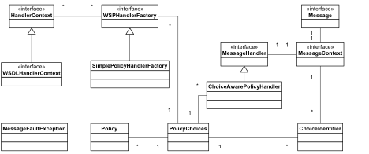
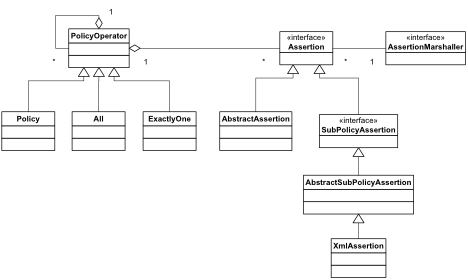
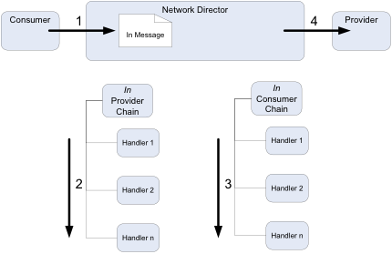

layout: page title: Custom Policy Development description: A guide to developing a custom policy component product: ag category: learn sub-nav-class: Custom Development weight: 05 type: page
This document contains the information required to:
It will begin with the design of the Custom Policy Handler Framework, then work through the required steps to guide a customer in creating a working custom Policy.
All Policy Handlers utilize the Policy Handler Framework provided by Akana. The Policy Handler Framework is a specialization of the Message Handler Framework that is also provided by Akana. The difference being that a policy handler is activated when a policy for that handler is attached to a service, whereas a message handler is activated for all services in and ND as soon as deployed. Given that the Policy Handler Framework is a specialization of the Message Handler Framework, there are many classes reused between the two:
 How a Handler determines which Policy it will act on is determined by the associated Policy classes as shown below:

The assertion Marshaller retrieves the policies from Policy Manager then calls the Policy Handler Factory to determine if it should create a Policy handler.
The Policy Handler Factory is tied to the Assertion Marshaller by the framework via the Spring wiring in the xx-policy-osgi.xml file on your build.
Note: The JavaDoc for these classes can be found in the API Gateway Reference section.
The Policy Handler framework works on the notion of Handler chains. These chains are associated with two criteria:
The following diagram shows how handler chains are processed for the IN message (such as an HTTP request):

The following diagram shows how handler chains are processed for the OUT message (such as an HTTP response):
Keep this design and chain sequence in mind when creating the design for a Policy Handler.
The Policy Handler is developed as an OSGi Plug-in. Please refer to the OSGi Plug-in Development document which describes how to set up an Eclipse workspace and create a basic plugin project.
Note: Sample policy handlers can be found in the /samples directory that is distributed with the product.
A typical policy handler plug-in will also have these additional folders:
All policies are defined using an XML schema which forms the basis for the model object generation using JAXB v2.
Create the XML Schema definition file:
xml
<?xml version="1.0" encoding="UTF-8"?>
<xs:schema targetNamespace="http://soa.com/products/policymanager/examples/policy/complex" elementFormDefault="qualified" attributeFormDefault="unqualified" xmlns:xs="http://www.w3.org/2001/XMLSchema" xmlns:cp="http://soa.com/products/policymanager/examples/policy/complex">
<xs:element name="Complex">
<xs:complexType>
<xs:sequence>
<xs:element name="HeaderName" type="xs:string"></xs:element>
<xs:element name="Optional" type="xs:boolean"></xs:element>
</xs:sequence>
</xs:complexType>
</xs:element>
</xs:schema>
Use JAXB v2 to generate Java classes for the schema that will end up in a Java package such as xxx.xxx.akana.policy.xxxx.assertion.model. Example build scripts, model objects and schema can be found in the /samples/com.soa.examples.policy.handler.complex policy plug-in that is distributed with the product.
Several Spring beans need to be published by the policy handler by editing the /META-INF/sping/*.xml files:
Assertion Marshaller
Define the Spring bean for the Policy Handler Factory and publish the OSGi services for the Policy Handler Factory. There should be one service definition per binding per role:
```xml
<osgi:service ref="complex.wsphandler.factory" interface="com.soa.policy.wspolicy.handler.WSPHandlerFactory">
<osgi:service-properties>
Define the Spring bean for the Policy Template that is used to describe aspects of the policy and publish the OSGi service:
```xml
<osgi:service ref="complex.policy.template" interface="com.soa.policy.template.OperationalPolicyTemplate">
<osgi:service-properties>
Define the Spring Bean for the new Policy Assertion Marshaller. This will be in the xxx.policy.xml file:
```xml
<bean id="complex.jaxb.marshaller" class="com.soa.policy.wspolicy.JaxbAssertionMarshaller" init-method="init">
<osgi:service ref="complex.assertion.marshaller" interface="com.soa.policy.wspolicy.AssertionMarshaller">
<osgi:service-properties>
Specify any cross-bundle references that are used by the new Handler Factory. For example, the need for specific XPATH or XML parsers. This will be in the xxx.policy-OSGi.policy file also.
xml
<osgi:reference id=“xpath.engine" interface="com.digev.fw.xpath.XPath" />
There are several packages that typically make up the solution for the Policy Handler:
This package contains the implementation of the Policy Handler.
xxxxConstants - Container class for static variables used in the Policy Handler.
xxxHandlerFactory - Implements the com.soa.policy.wspolicy.handler.WSPHandlerFactory interface.
The framework instantiates a handler factory based on code and configuration found in the deployed handler bundle. When the framework requires a handler instance (essentially when an Assertion Marshaller detects a policy attached to the service and un-marshal’s that into and Assertion), it calls the handler factory’s create method. It is during the create call that the handler factory can determine whether the framework is asking for a consumer handler or a provider handler (via the HandlerRole).
The hander factory can make use of the HandlerContext to learn more about the context of the creation event. The HandlerContext would typically be a WSDLHandlerContext. Casting the object to this interface will provide valuable WSDL based information about the service / operation including the entire WSDL document and the WSDL operation name.
xxxxPolicyHandler - This implements the com.soa.message.handler.MessageHandler interface.
This is where all the functionality of the policy is supposed is implemented, and is based on the context that is passed into it by the Factory.
A new handler is created per in, out, and fault message for a given operation. Because policy can differ based on in, out, and fault messages, the handler may behave differently based on which message type it is handling. At creation time the handler factory will be told by the container which type of message it is handling. At r
com.soa.policy.wspolicy.JavaAssertion interface.
An Assertion is the un-marshalled XML policy that was attached to the Service in the PM console. It has getters and setters for the values of the elements that make up the policy directives.
com.soa.policy.wspolicy.AssertionMarshaller interface.
An assertion marshaller is deployed separately from a handler. During the reading of a service’s policy by the framework, the marshaller is called upon to construct assertion Java objects from the assertions encoded in XML and WS-Policy. The constructed assertion objects are then passed down to handler factories to determine if handlers are to be created.
This package contains Java model generated by the JAXB framework; typically using the JAXB xjc utility and Ant to generate these classes.
In the com.soa.examples.policy.handler.complex policy plug-in, the build/build.xml file contains an 'assertions' target that is responsible for the generation of the model objects.
Policies are configured in the Policy Manager console via one of two different mechanisms:
The Policy Handler Console Plug-in is developed as an OSGi Plug-in. Please refer to the OSGi Plug-in Development document which describes how to set up an Eclipse workspace and create plug-in projects. Ensure that you have followed the directions for 'Compiling the complex policy handler example'.
A typical policy handler console plug-in will also have these additional folders:
Two Spring beans need to be published by the policy handler by editing the /META-INF/sping/*.xml files:
Faces Config
Define the Spring bean for the Policy Renderer and publish the OSGi service:
```xml
<osgi:service ref="complex.policy.renderer" interface="com.soa.console.policy.renderer.OperationalPolicyRenderer"/>
```
Define the Spring bean for the Faces configuration and publish the OSGi service. This rarely needs any customization but is required for the policy to work correctly:
xml
<osgi:service interface="com.soa.console.faces.config.FacesConfig">
<osgi:service-properties>
<entry key="name" value="com.soa.examples.complex.policy.faces.config"/>
</osgi:service-properties>
<bean class="com.soa.console.faces.myfaces.MyFacesConfigFactory">
<property name="location" value="classpath:faces/faces-config.xml"/>
</bean>
</osgi:service>
There are several packages that typically make up the solution for the Policy Handler:
This package contains the renderer for the Policy Handler.
com.soa.console.policy.renderer.impl.OperationalPolicyRendererBase abstract class.This package contains the form bean for Policy which include the getters and setters for the form fields and the logic for converting between the form and the policy assertion.
com.digev.ms.console.struts.forms.MSActionForm abstract class.All localization is supported by message bundles in the OSGI-INF/l10n directory. Al labels in the entire product need to be specified with a unique name so its wise to prefix all labels with the java package name.
The policy.xxxx.name is a special property and should always match the id from the PolicyRenderer - with a '.name' suffix:
policy.complexexample.name=Complex Example Policy
com.soa.examples.console.policy.complex.options.label=Options
com.soa.examples.console.policy.complex.headername.label=Header Name
com.soa.examples.console.policy.complex.optional.label=Optional
To localize text in the JSP pages, simply use the <workbench:message> tag:
xml
<workbench:message key="com.soa.examples.console.policy.complex.headername.label"/>
The WebContent/xxxpolicy directory contains the files required to render the user interface. The entry point is defined in the PolicyRender.getContentLocation(String policyKey) method. e.g:
```java public class ComplexPolicyRenderer extends OperationalPolicyRendererBase {
public String getId() {
return "policy.complexexample";
}
public String getContentLocation(String policyKey) throws GException{
return "/complexpolicy/complex_policy_details.jsp?policyKey="+policyKey;
}
public String getContentLocation(HttpServletRequest request)
throws GException {
return getContentLocation(getPolicyKey(request));
}
} ```
In this case, the complex_policy_details.jsp JSP page is passed the PolicyBean and renders the policy details. It also contains a link to the page used to modify the policy. In this example:
html
<td><b><workbench:message key="com.soa.examples.console.policy.complex.options.label"/></b>
| <a href="javascript:(new createWindow('<%=request.getContextPath()%>/complexpolicy/modify_complex_policy_details.faces?policyKey=<%=policyKey%>', 'ActionWizardWindow', 10, 10, 550, 200, 'no', 'yes', 'no', 'no', 'no').openWindow());"><workbench:message key="com.soa.examples.console.policy.complex.modify.label"/></a>
</td>
When the 'Save' button is clicked, the PolicyBean is called to process the form and save the assertion:
xml
<h:commandButton id="finish" style="display:none;" action="#{ComplexPolicyBean.modifyAction}"/>
<f:verbatim><feat:Button label="save" onclick="submitFinish()"/></f:verbatim>
This is not necessary for anytime but the first time you deploy the Policy Handler. Its function is to simply to make sure that you know what is happening. Once you are comfortable with loading the Policy Handler you can disable this console. To start the TUI (Textual User Interface) console simply copy the lib/ext/org.apache.felix.shell.tui-x.x.x.jar file into the instances/[container name]/deploy directory. Immediately the “->” prompt should appear in your SSH session.
The simplest way to deploy the policy handler is to copy the jar files into the 'instances/[CONTAINER NAME]/deploy' directory.
The Policy Manager requires both the 'policy handler' and 'policy handler console' bundles, whereas the Network Director only requires the 'policy handler' bundle.
To check that the new bundles are active, simply type “ps” (without the quotes) into the TUI (see previous section) and look for the new bundles at the end of the list. You can also see the installed bundles from the Installed Features tab in the Admin console. Select 'Bundle' from the Filter drop-down list.
The best way to test the Policy Handler is to use the remote debug features of Eclipse and the Felix Container.
Restart the container specifying the –debug option: (from [SOA_HOME]/sm60/bin):
./startup.sh <ND name> –debug 7777
Set up a remote debug session in Eclipse and connect to the process.
Once deployment is completed the policy handler will be loaded and invoked once a service with the correct policy attached is detected by the Network Director. For this to happen, you must attach the policy to a service in Policy Manager. However, before this can happen, you must define the Policy in Policy Manager and attach it to a Service.